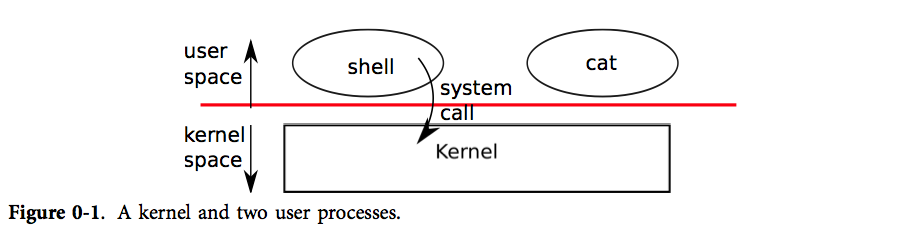

操作系统接口
操作系统的工作：
- 将计算机的资源在多个程序间共享，并且给程序提供一系列比硬件本身更有用的服务。
- 管理并抽象底层硬件
- 多路复用硬件，使得多个程序可以(至少看起来是)同时运行的
- 最后，给程序间提供一种受控的交互方式，使得程序之间可以共享数据、共同工作
操作系统通过接口向用户程序提供服务。让接口的设计依赖于少量的机制 （mechanism)，而通过这些机制的组合提供强大、通用的功能。提供机制而不是方法。

提供的接口如下：
| 系统调用 | 描述 |
|---|---|
| fork() | 创建进程 |
| exit() | 结束当前进程 |
| wait() | 等待子进程结束 |
| kill(pid) | 结束 pid 所指进程 |
| getpid() | 获得当前进程 pid |
| sleep(n) | 睡眠 n 秒 |
| exec(filename, *argv) | 加载并执行一个文件 |
| sbrk(n) | 为进程内存空间增加 n 字节 |
| open(filename, flags) | 打开文件，flags 指定读/写模式 |
| read(fd, buf, n) | 从文件中读 n 个字节到 buf |
| write(fd, buf, n) | 从 buf 中写 n 个字节到文件 |
| close(fd) | 关闭打开的 fd |
| dup(fd) | 复制 fd |
| pipe( p) | 创建管道， 并把读和写的 fd 返回到p |
| chdir(dirname) | 改变当前目录 |
| mkdir(dirname) | 创建新的目录 |
| mknod(name, major, minor) | 创建设备文件 |
| fstat(fd) | 返回文件信息 |
| link(f1, f2) | 给 f1 创建一个新名字(f2) |
| unlink(filename) | 删除文件 |
进程和内存
一个 xv6 进程由两部分组成，一部分是用户内存空间（指令，数据，栈），另一部分是仅对内核可见的进程状态。
xv6 提供了分时特性：它在可用 CPU 之间不断切换，决定哪一个等待中的进程被执行。
内核将每个进程和一个 pid (process identifier) 关联起来。
一个进程可以通过系统调用 fork 来创建一个新的进程。fork 创建的新进程被称为子进程，子进程的内存内容同创建它的进程（父进程）一样。子进程返回 0，而父进程返回子进程的 pid。
系统调用 wait 会返回一个当前进程已退出的子进程，如果没有子进程退出，wait 会等候直到有一个子进程退出。即使用 wait 回收子进程。
父子进程拥有不同的内存空间和寄存器，改变一个进程中的变量不会影响另一个进程。
系统调用 exec 将从某个文件（通常是可执行文件）里读取内存镜像，并将其替换到调用它的进程的内存空间。即读取 elf 文件。
观察 shell 中 main 的代码（8001），就可以明白，shell 其实就是在不断读取输入的命令，fork 创建子进程，exec 加载子进程执行即可。
源码
在 7922 行，我们得到如下结果：
1 | caes EXEC: |
我们发现和有意思的现象，如果代码正确执行了，那么 exec 是不会返回的。
我们还发现，fork 和 exec 是分离的，即加载一个程序分为两步：fork创建进程，exec加载进行。
xv6 通常隐式地分配用户的内存空间。fork 在子进程需要装入父进程的内存拷贝时分配空间，exec 在需要装入可执行文件时分配空间。一个进程在需要额外内存时可以通过调用 sbrk(n) 来增加 n 字节的数据内存。 sbrk 返回新的内存的地址。
其实没什么新鲜的，就是 copy-on-write。
I/O 和文件描述符
文件描述符是一个整数，它代表了一个进程可以读写的被内核管理的对象。
常常把文件描述符指向的对象称为“文件”。
- 进程从文件描述符0读入（标准输入）
- 从文件描述符1输出（标准输出）
- 从文件描述符2输出错误（标准错误输出）
shell 中代码（8007），保证 console 拥有前 3 个打开的文件描述符：
1 | while ((fd = open("console", O_RDWR)) >= 0) { |
系统调用 read 和 write 从文件描述符所指的文件中读或者写 n 个字节。每一个指向文件的文件描述符都和一个偏移关联。
read(fd, buf, n)write(fd, buf, n)
系统调用 close 会释放一个文件描述符，使得它未来可以被 open, pipe, dup 等调用重用。一个新分配的文件描述符永远都是当前进程的最小的未被使用的文件描述符。
使用文件描述付和 fork 实现 I/O 重定向：fork 一个进程，重新打开指定文件的文件描述符，然后执行新的程序。
这是因为fork 会复制父进程的文件描述符和内存，所以子进程和父进程的文件描述符一模一样。exec 会替换调用它的进程的内存但是会保留它的文件描述符表。
下面这个例子展示了如何使用重定向的方式使用 cat：
1 | char *argv[2]; |
源码
在 xv6 中，这部分是这么实现的（7930）：
1 | case REDIR: |
需要注意的是，fork 复制文件描述符时，文件偏移是在进程之间共享的。
dup 可以复制已有的文件描述符。返回一个指向同一个 I/O 对象的新描述符。共享文件偏移。
管道
管道是一个小的内核缓冲区，它以文件描述符对的形式提供给进程，一个用于写操作，一个用于读操作。
管道的 0 号用于进程读，1 号用于进程写。
1 | int p[2]; |
如果数据没有准备好，那么对管道执行的read会一直等待，直到有数据了或者其他绑定在这个管道写端口的描述符都已经关闭了。在后一种情况中，read 会返回 0，就像是一份文件读到了最后。读操作会一直阻塞直到不可能再有新数据到来了，这就是为什么我们在执行 wc 之前要关闭子进程的写端口。
源码
在 xv6 中，shell 对管道是这么处理的（7950）：
1 | case PIPE: |
文件系统
xv6 文件系统提供文件和目录，文件就是一个简单的字节数组，而目录包含指向文件和其他目录的引用。
mknod 在文件系统中创建一个文件，但是这个文件没有任何内容。
fstat 可以获取一个文件描述符指向的文件的信息。
文件名和这个文件本身是有很大的区别。同一个文件（称为 inode）可能有多个名字，称为连接 (links)。
系统调用 unlink 从文件系统移除一个文件名。
一个文件的 inode 和磁盘空间只有当它的链接数变为 0 的时候才会被清空，也就是没有一个文件再指向它。
现实情况
UNIX 将“标准”的文件描述符，管道，和便于操作它们的 shell 命令整合在一起，这是编写通用、可重用程序的重大进步。这个想法激发了 UNIX 强大和流行的“软件工具”文化，而且 shell 也是首个所谓的“脚本语言”。